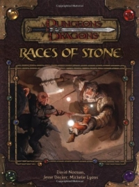

“Races of Stone” on the
Shelf of Many Books

Races of Stone
D&D 3.5
(3e)
Year
: 2004
Races of Stone
on Amazon
Races of Stone
on TSR Info
Known monsters from the book:
Chaos Gnome
Deep Hound
Dire Eagle
Dream Dwarf
Earth Whisper
Feral Gargun
Hammer Archon
Stone Drake
Thrum Worm
Whisper Gnome